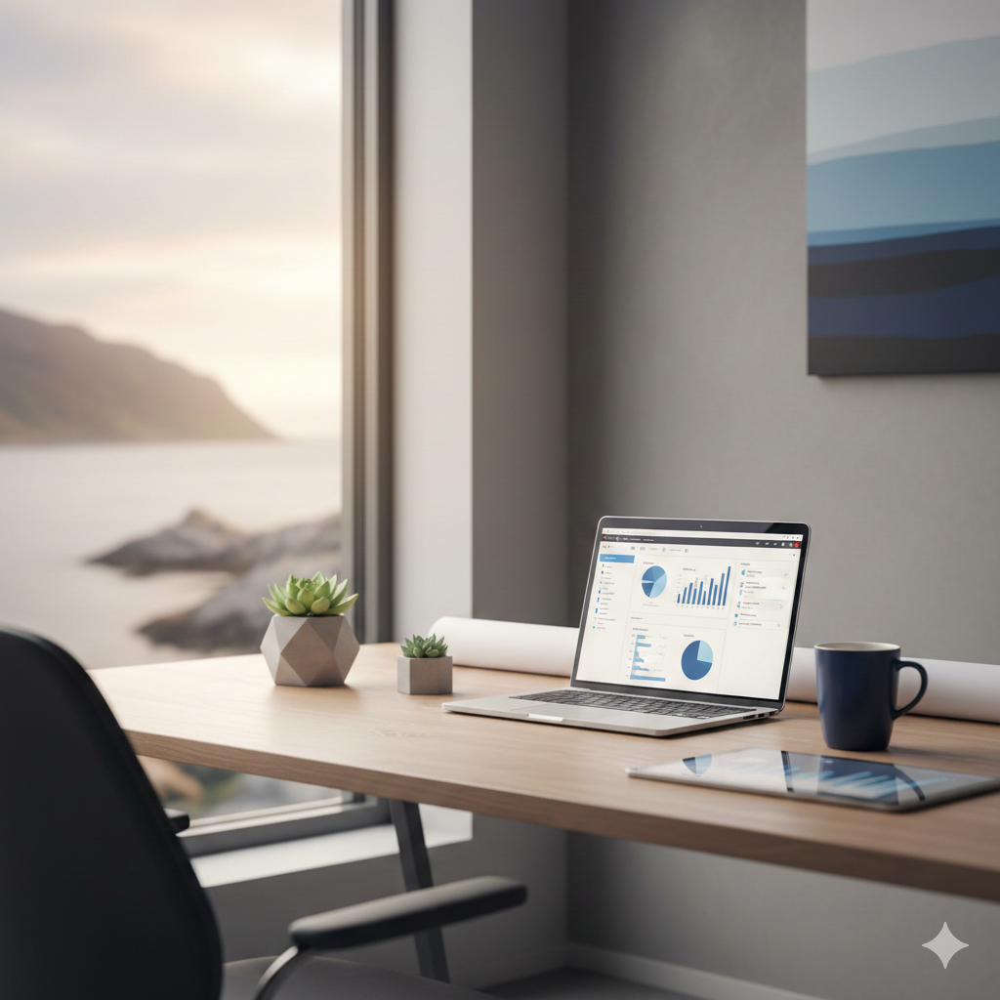

Practical processes, the right technology, and clear, predictable outcomes.
Kapp Nordic is a Scandinavian-inspired consultancy that helps organisations work smarter by improving processes, applying the right technology, and increasing predictability. We focus on practical solutions, not buzzwords— fixing bottlenecks, reducing manual work, and giving leaders clearer visibility so their teams can operate smoothly.
Clear workflows and sensible structures that make everyday work easier. We remove friction, improve handovers, and reduce manual steps.
Only the tools that help — automation, dashboards, insights, and integrations. Technology that reduces work, not adds more.
Better forecasting, capacity planning, and visibility. Less guesswork. More control. Smoother operations every day.
Want to know where your biggest opportunities are?
Take our 2-minute SmartWork Assessment. It adapts to your business and gives you a personalised report instantly.
Kapp Nordic is led by Peter Neubert, a Danish engineer with over 25 years of experience across Europe, Africa, and the Indian Ocean.
We combine Scandinavian simplicity with practical execution and modern AI capabilities. Our approach is straightforward—no jargon, no big promises, just practical improvements that make a noticeable difference.
Learn More About Us